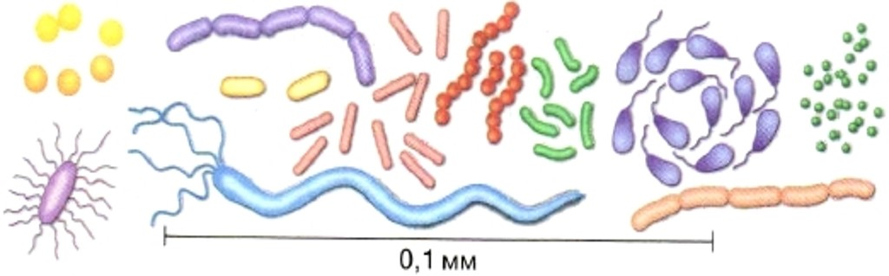
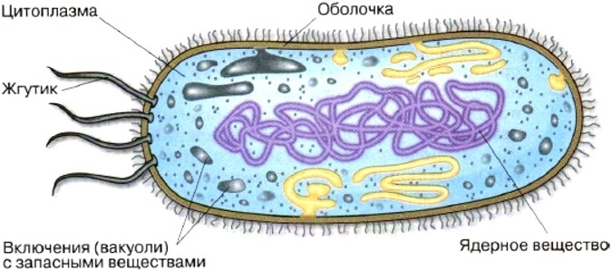
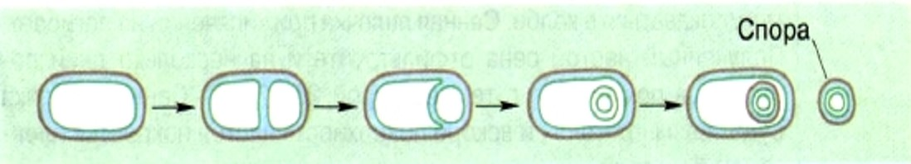
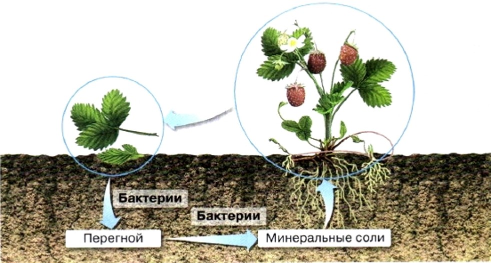
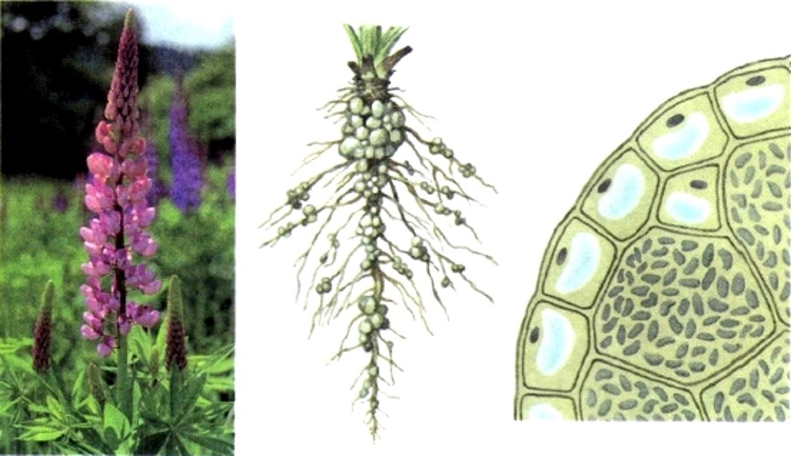
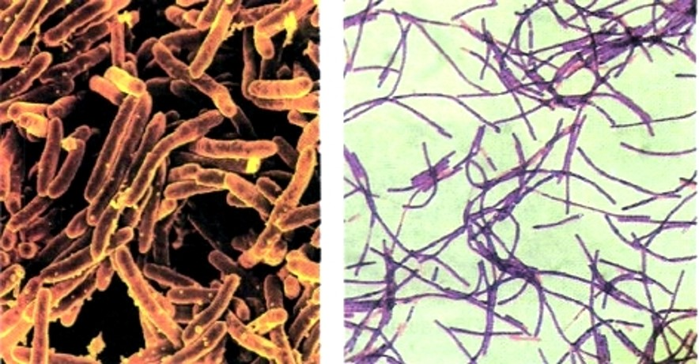

1. Строение и жизнедеятельность бактерий
Бактерии — относительно просто устроенные микроскопические одноклеточные организмы. Форма бактерий (рис. 8). В зависимости от формы клетки бактерии различают: шарообразные кокки, палочковидные бациллы, изогнутые в виде запятой вибрионы, спиралевидные спириллы. Очень часто бактерии образуют скопления в виде длинных изогнутых цепочек, групп и плёнок. Некоторые бактерии имеют один или несколько жгутиков. Среди бактерий есть подвижные и неподвижные формы. Подвижные передвигаются за счёт волнообразных сокращений или при помощи жгутиков. Большинство бактерий бесцветно. Только немногие окрашены в пурпурный или зелёный цвет.
Строение бактерий. Бактериальные клетки окружены плотной оболочкой, благодаря которой сохраняют постоянную форму. По составу и строению клеточные оболочки бактерий существенно отличаются от оболочек растений. Оформленного ядра, отделённого от цитоплазмы ядерной оболочкой, в клетке нет. Ядерное вещество у большинства бактерий распределено в цитоплазме.
Распространение бактерий. Практически нет места на Земле, где бы не встречались бактерии. Они живут во льдах Антарктиды при температуре -83 °С и в горячих источниках, температура которых достигает +85—90 °С. Особенно много их в почве. В 1 г почвы могут содержаться сотни миллионов бактерий. Число бактерий различно в воздухе проветренных и непроветренных помещений. Так, в классе после проветривания перед началом урока бактерий в 13 раз меньше, чем в той же комнате после урока. Условия жизни бактерий разнообразны. Одним из них необходим кислород воздуха, другие в нём не нуждаются и способны жить в бескислородной среде. Питание бактерий. Большинство бактерий питается готовыми органическими веществами. Лишь некоторые из них, например синезелёные, или цианобактерии, способны создавать органические вещества из неорганических. Они сыграли важную роль в накоплении кислорода в атмосфере Земли.
Размножение бактерий. Размножаются бактерии делением одной клетки на две. При благоприятных условиях деление клеток у многих бактерий может происходить через каждые 20—30 мин. При таком быстром размножении потомство одной бактерии за 5 суток способно образовать массу, которой можно было бы заполнить все моря и океаны. Однако в природе этого не происходит, так как большинство бактерий быстро погибает под действием солнечного света, при высушивании, недостатке пищи, нагревании до 65—100 °С, под действием дезинфицирующих веществ, в результате борьбы между видами и т. д. Образование спор. В неблагоприятных условиях (при недостатке пищи, влаги, резких изменениях температуры) цитоплазма бактериальной клетки, сжимаясь, отходит от материнской оболочки, округляется и образует внутри неё на своей поверхности новую, более плотную оболочку (рис. 10). Такую бактериальную клетку тоже называют спорой (от греческого слова «спора» — семя). Споры некоторых бактерий сохраняются очень долго в самых неблагоприятных условиях. Они выдерживают высушивание, жару и мороз, не сразу погибают даже в кипящей воде. Споры легко разносятся ветром, водой и т. д. Их много в воздухе и почве.
2. Роль бактерий в природе и жизни человека
Бактерии разложения и гниения. Бактерии — важнейшее звено общего круговорота веществ в природе. Растения создают сложные органические вещества из углекислого газа, воды и минеральных солей почвы. Эти вещества возвращаются в почву с отмершими грибами, растениями и трупами животных. Бактерии разлагают сложные вещества на простые, которые снова используют растения. Бактерии разрушают сложные органические вещества отмерших растений и трупов животных, выделения живых организмов и разные отбросы. Питаясь этими органическими веществами, сапротрофные бактерии гниения превращают их в перегной. Они — своеобразные санитары нашей планеты.
Почвенные бактерии. В 1 см3 поверхностного слоя лесной почвы содержатся сотни миллионов сапротрофных почвенных бактерий нескольких видов. Эти бактерии превращают перегной в различные минеральные вещества, которые могут быть поглощены из почвы корнями растений. Некоторые почвенные бактерии способны поглощать азот из воздуха, используя его в процессах жизнедеятельности. Эти азотофиксирующие бактерии живут самостоятельно или поселяются в корнях бобовых растений. Проникнув в корни бобовых, эти бактерии вызывают разрастание клеток корней и образование на них клубеньков. Их называют клубеньковыми. Эти бактерии выделяют азотные соединения, которые используют растения. От растений бактерии получают углеводы и минеральные соли. Таким образом, между бобовым растением и клубеньковыми бактериями существует тесная связь, полезная как одному, так и другому организму. Это явление называется симбиоз (от греческого слова «симбиозис» — совместная жизнь). Благодаря симбиозу с клубеньковыми бактериями бобовые растения обогащают почву азотом, способствуя повышению урожая.
Болезнетворные бактерии. Некоторые виды бактерий-паразитов проникают в организм человека и поселяются там, вызывая заболевания. В теле человека болезнетворные бактерии питаются, быстро размножаются и отравляют организм продуктами своей жизнедеятельности. Бактерии вызывают тиф, холеру, дифтерию, столбняк, туберкулёз, ангину, менингит, сап, сибирскую язву, бруцеллёз и другие болезни. Одними из этих болезней человек может заразиться при общении с больным через мельчайшие капельки слюны при разговоре, кашле и чихании, другими — при употреблении пищи или воды, в которую попали болезнетворные бактерии. Антисанитарные условия, грязь, большая скученность людей, несоблюдение правил личной гигиены создают благоприятные условия для быстрого размножения и распространения болезнетворных бактерий. Это может вызвать эпидемию, то есть массовое заболевание людей.
Чуму — одно из самых тяжёлых заболеваний — вызывают чумные палочки. Опустошительные эпидемии чумы в древности были самым страшным бедствием. Например, в VI в. чума проникла с Востока в Центральную Европу. Свирепствуя там, болезнь истребляла в крупных городах тысячи человек в день. История человеческого общества знает немало эпидемий, подобных этой.